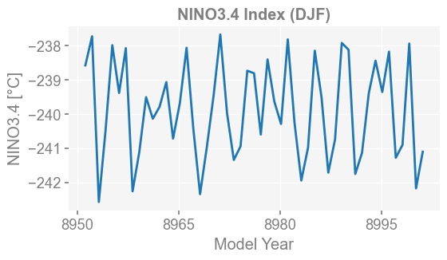
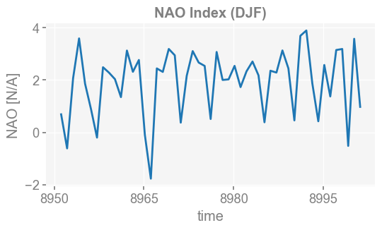

Climate Indices#
One may calculate popular cliamte indices with x4c.
Example Datasets: Zhu, F. & Zhu, J. Long simulations of the Miocene Climatic Optimum, DOI: 10.5065/3QFN-GN70 (2025). https://rda.ucar.edu/datasets/d010026/.
[1]:
%load_ext autoreload
%autoreload 2
import os
import x4c
import datetime
os.chdir('/glade/u/home/fengzhu/Github/x4c/docsrc/notebooks')
print(x4c.__version__)
print(f'Last Update: {datetime.date.today()}')
2026.3.9
Last Update: 2026-03-23
[2]:
dirpath = './b.e13.B1850C5.ne16_g16.icesm131_d18O_fixer.Miocene.3xCO2.005'
case = x4c.Timeseries(dirpath, grid_dict={'atm': 'ne16np4'}, cesm_ver=1)
>>> case.root_dir: /glade/u/home/fengzhu/Github/x4c/docsrc/notebooks/b.e13.B1850C5.ne16_g16.icesm131_d18O_fixer.Miocene.3xCO2.005
>>> case.path_pattern: comp/proc/tseries/*/casename.hstr.vn.timespan.nc
>>> case.grid_dict: {'atm': 'ne16np4', 'ocn': 'g16', 'lnd': 'ne16np4', 'rof': 'ne16np4', 'ice': 'g16'}
>>> case.casename: b.e13.B1850C5.ne16_g16.icesm131_d18O_fixer.Miocene.3xCO2.005
>>> case.paths["atm"]["cam.h0"] created
>>> case.paths["ocn"]["pop.h"] created
>>> case.paths["lnd"]["clm2.h0"] created
>>> case.paths["rof"]["rtm.h0"] created
>>> case.paths["ice"]["cice.h"] created
>>> case.vns["atm"]["cam.h0"] created
>>> case.vns["ocn"]["pop.h"] created
>>> case.vns["lnd"]["clm2.h0"] created
>>> case.vns["rof"]["rtm.h0"] created
>>> case.vns["ice"]["cice.h"] created
Now let’s load the surface temperature (TS).
[3]:
case.load('LST', comp='atm', hstr='cam.h0a')
case.ds['LST']
>>> LST is a supported derived variable.
>>> case.ds["TS"] created
>>> case.ds["LANDFRAC"] created
>>> case.ds["LST"] created
[3]:
<xarray.DataArray 'LST' (time: 600, ncol: 13826)> Size: 33MB
array([[nan, nan, nan, ..., nan, nan, nan],
[nan, nan, nan, ..., nan, nan, nan],
[nan, nan, nan, ..., nan, nan, nan],
...,
[nan, nan, nan, ..., nan, nan, nan],
[nan, nan, nan, ..., nan, nan, nan],
[nan, nan, nan, ..., nan, nan, nan]],
shape=(600, 13826), dtype=float32)
Coordinates:
* time (time) object 5kB 8951-01-01 00:00:00 ... 9000-12-01 00:00:00
lat (ncol) float64 111kB -35.26 -35.98 -37.07 ... 37.91 37.91 36.74
lon (ncol) float64 111kB 315.0 316.6 319.1 320.6 ... 132.5 137.5 135.0
Dimensions without coordinates: ncol
Attributes:
units: K
long_name: Land Surface Temperature
cell_methods: time: mean
path: /glade/u/home/fengzhu/Github/x4c/docsrc/notebooks/b.e13.B1...
gw: <xarray.DataArray 'area' (ncol: 13826)> Size: 111kB\narray...
lat: <xarray.DataArray 'lat' (ncol: 13826)> Size: 111kB\n[13826...
lon: <xarray.DataArray 'lon' (ncol: 13826)> Size: 111kB\n[13826...
comp: atm
grid: ne16np4
vn: LST[20]:
case.load('NINO3.4', comp='atm', hstr='cam.h0a')
case.ds['NINO3.4']
>>> NINO3.4 is a supported derived variable.
>>> SST is a supported derived variable.
>>> case.ds["TEMP"] already loaded; to reload, run case.load("TEMP", ..., reload=True).
>>> case.ds["SST"] created
>>> case.ds["NINO3.4"] created
[20]:
<xarray.DataArray 'NINO3.4' (time: 600)> Size: 5kB
array([34.64201598, 34.49932014, 34.83982131, 34.50656715, 34.56514291,
34.4389713 , 34.30697738, 34.54321542, 34.60177407, 35.02919812,
35.19703869, 35.37756778, 35.40463816, 35.48044284, 34.94618996,
34.80562082, 34.53762182, 33.77954932, 32.48466854, 31.3739649 ,
30.45648264, 31.00296001, 31.17731826, 30.7815647 , 30.4569054 ,
30.50449613, 30.75127065, 30.94617392, 31.05861155, 31.2885553 ,
31.49302244, 30.95190213, 30.69101955, 31.07988369, 31.43946484,
32.13295429, 32.78599716, 33.11839846, 33.294223 , 33.42054948,
33.65875607, 33.81172555, 33.67530716, 33.5060176 , 33.74530751,
34.21163708, 34.78606363, 34.87807504, 35.25870729, 35.34373249,
35.19179007, 34.38897869, 33.87170833, 33.79856015, 33.50478518,
33.0481401 , 32.47367179, 32.93904223, 33.74150543, 34.04716809,
33.54067883, 33.70365434, 33.87283624, 34.11234902, 34.3475289 ,
34.33866556, 34.13462077, 33.95430796, 34.00375622, 34.45403878,
34.95885618, 35.0256073 , 35.09091884, 35.10704532, 34.9784465 ,
34.42183305, 34.18577768, 33.78177509, 33.00215538, 31.57788128,
30.53413988, 30.51374876, 30.9951369 , 30.98898088, 31.08256251,
30.60653801, 30.77986108, 30.78940654, 30.84736574, 31.11711675,
30.92043127, 30.36724798, 29.962654 , 30.43971847, 31.17317521,
31.75760033, 32.16869048, 32.20616291, 32.34759662, 32.77306587,
...
32.41986842, 32.63543789, 33.1544494 , 33.29935183, 33.99467577,
33.96820621, 33.6727948 , 33.16489348, 33.03549802, 32.89066574,
32.85594191, 33.1012391 , 33.39644824, 33.87336419, 34.24972254,
34.65696036, 34.70630709, 34.76193408, 34.67494353, 34.55819669,
34.19269471, 34.04582019, 33.63349259, 33.23383604, 33.14708036,
33.05632402, 33.79804468, 33.845072 , 33.7883659 , 33.74576258,
34.00235139, 33.89341123, 33.5624357 , 33.70428144, 33.65856004,
33.68869374, 34.05529797, 34.34052678, 34.66514729, 34.75843199,
35.03159828, 35.12616986, 34.46134064, 33.65432874, 33.50581739,
33.05160048, 32.66413454, 31.7215476 , 30.93648419, 31.67505915,
32.05481226, 32.44093356, 31.66732042, 31.50710275, 31.57954848,
31.38495394, 31.29553947, 31.06814472, 31.12323029, 30.89307837,
30.78507035, 31.03625596, 31.56472567, 31.86896683, 32.33676976,
32.54158371, 32.93652969, 33.60555573, 33.78659412, 33.72763022,
33.48563127, 33.51795282, 33.8457507 , 34.38806799, 34.97875403,
35.21996033, 35.23377059, 35.17018545, 34.93703811, 34.41637607,
33.3946718 , 32.33366411, 31.37934894, 29.99785996, 30.03975586,
30.2819587 , 30.75396957, 30.95604528, 31.04850759, 30.93107817,
31.00480188, 31.0878668 , 31.33381939, 31.45418245, 31.31871579,
30.82817616, 30.60453149, 30.88529415, 31.63853937, 32.04947063])
Coordinates:
* time (time) object 5kB 8951-01-01 00:00:00 ... 9000-12-01 00:00:00
z_t float32 4B 500.0
Attributes:
long_name: NINO3.4 Index
units: K
grid_loc: 3111
cell_methods: time: mean
path: /glade/u/home/fengzhu/Github/x4c/docsrc/notebooks/b.e13.B1...
gw: <xarray.DataArray 'TAREA' (nlat: 384, nlon: 320)> Size: 98...
lat: <xarray.DataArray 'TLAT' (nlat: 384, nlon: 320)> Size: 983...
lon: <xarray.DataArray 'TLONG' (nlat: 384, nlon: 320)> Size: 98...
dz: <xarray.DataArray 'dz' (z_t: 60)> Size: 240B\n[60 values w...
comp: ocn
grid: g16
vn: NINO3.4[21]:
x4c.set_style('web', font_scale=1.2)
fig, ax = case.plot('NINO3.4:12,1,2')

[4]:
x4c.set_style('web', font_scale=1.2)
spell = 'NAO:12,1,2'
case.calc(spell, recalculate=True)
fig, ax = case.plot(spell)
>>> NAO is a supported derived variable.
>>> case.ds["PSL"] already loaded; to reload, run case.load("PSL", ..., reload=True).
>>> case.ds["NAO"] created
>>> Timespan: [8951-01-01 00:00:00, 9000-12-01 00:00:00]
>>> case.diags["NAO:12,1,2"] created

[ ]: